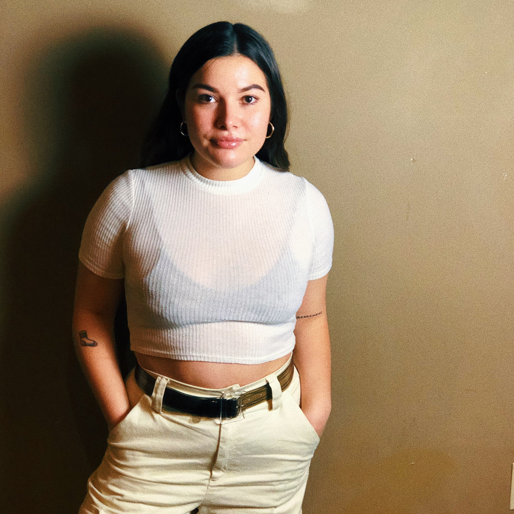
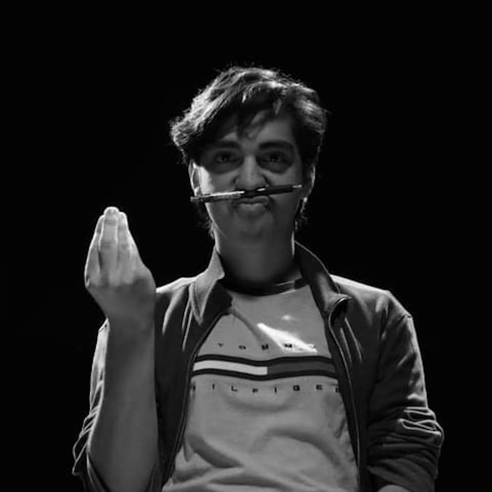

Isabelle Charlot
Screenwriter | Actor | Producer
Brockton, Massachusetts
Isabelle Charlot is a young actor, writer, and producer from the Greater Boston area. She attended the University of Massachusetts Amherst where she studied Sociology. Isabelle is also a production assistant for Amazon Studios, a publicist, and has worked with companies such as Netflix and AMC. She is big on writing about relatable black culture and sheds light on the under-representation of minorities in media. Her dream is to become a successful actor, director, and cinematographer and in the long run, open a talent agency/production company that will give under-represented talent the recognition they deserve. She currently resides in Brockton, Massachusetts.
Imani M. Davis
Producer | Writer
Chicago, Illinois
Imani Davis is a Chicago-based film producer, writer, and engagement strategist. She has been the recipient of Reunion Chicago's Cultural Producer's Grant and Mezcla Media Collective's & Banner TV's Inaugural Film Microgrant. She is the lead producer for an upcoming web series surrounding the Egyptian and Muslim-American women experience titled Ghareeb and is also in development for a femme-driven heist short film she wrote and is producing titled Fresh Cut Flowers.
Mariola García
Actor | Writer | Director
Mexico City, Mexico
Mariola Garcia Jurado is a young, actress, writer and aspiring director based in Mexico City. She is currently studying acting in The American Academy of Dramatic Arts in New York City. Her passion recites on seeking truth, honesty, humility but most importantly in creating emotion. Her main goal is to be able to write, direct and act on her own films as well as going back to Mexico to help the muted talent that is being suppressed raise their voice and show what beauty Mexicans achieve with love, passion and hard work.

Karina Hernandez
Director | Writer | Story Editor | Post-Production Editor | On Unit Photographer
Chicago Illinois
Karina Hernandez is a young writer & aspiring screenplay writer/filmmaker from Madison, Wisconsin. She attended University of Wisconsin-Madison where she majored in communication of arts, emphasizing in film. Her dream is to write and direct film where she can create a space with [and for] her peers to constantly pitch new ideas. When writing, she leans towards the alt/dark comedy style. She is currently based in Chicago, IL.
Edwinson Matias
Aspiring Screenwriter | Director
New York, New York
Edwinson Matias is a young writer & aspiring director from The Bronx, New York. He attended John Jay College of Criminal Justice where he studied Criminal Justice, History & Film, while currently working from time to time in production. His dream is to ultimately make films that reflect his city, experiences & what he believes will push "The Culture" forward in a non-conventional way. Catharsis is what he seeks.. He is currently based in Brooklyn, New York.

Alberto Lagunas Pérez
Screenwriter | Storyboard Artist | Director
Cancún, México
Alberto Lagunas is a young filmmaker (writer/director and storyboard artist), born and raised in Cancún, México. He currently attends at the University of Audiovisual Mediums CAAV. He aims to connect with as many people as possible as well as himself, by sharing his life experiences on the big screen. As of now, Alberto is based in Cancún, México.
Ryan Poulin
Director | Screenwriter | Actor
Essex, Vermont
Ryan Poulin is a writer, director, and actor from Essex, Vermont. He has been attending Arizona State University for Film and Media Studies but plans to take time off to pursue personal projects and join groups in the area. He is deeply interested with voice acting, and developing video games, and animated shows.
Christina Serrano
Screenwriter | Playwright
San Diego, California
Christina Serrano is a San Diego-based screenwriter and playwright, as well as graduating senior from the University of California, San Diego where she studies Early Childhood Education and Theatre. For her, crafting the perfect script means writing honestly, empathetically, and with performance in mind. She hopes that her work encapsulates all of these aspects and leads to collaboration amongst other young creatives.